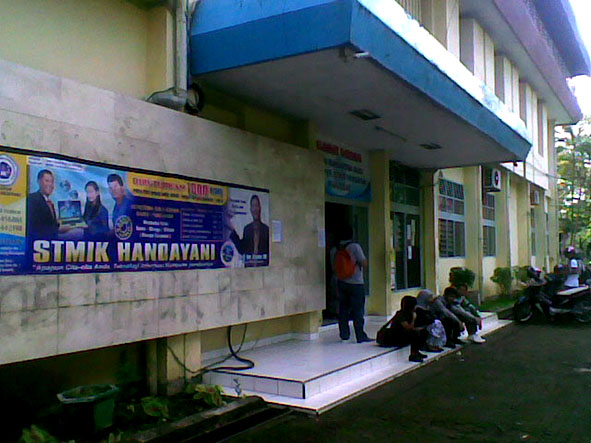

Sejarah Berdiri Universitas Handayani Makassar
Yayasan Pendidikan Handayani didirikan oleh Dr. H. A. Moh. Alifuddin, M.M., M.Kom. sejak tanggal 31 Januari 1996 berdasarkan Akta No. 20 Notaris Mahmud Said, S.H. di Ujung Pandang. Sekolah Tinggi Manajemen Informatika dan Komputer (STMIK) Handayani resmi berdiri melalui Surat Keputusan Menteri Pendidikan Nasional Republik Indonesia Nomor 37/D/O/1996 pada tanggal 21 Juni 1996.
Pada tahun 2022, STMIK Handayani resmi bertransformasi menjadi UNIVERSITAS HANDAYANI MAKASSAR (UHM) berdasarkan Surat Keputusan Menteri Pendidikan, Kebudayaan, Riset, dan Teknologi Nomor 497/E/O/2022 tanggal 13 Juli 2022. Kampus Universitas Handayani Makassar berlokasi di Jl. Adiyaksa Baru No. 1, Makassar, Sulawesi Selatan.

Milestone & Perjalanan Perkembangan Kampus
Visi, Misi & Tujuan Institusi
VISI
MISI
Tujuan Universitas
Profil Pimpinan Universitas
Para pimpinan yang mengarahkan visi dan jalannya pendidikan di UHM.